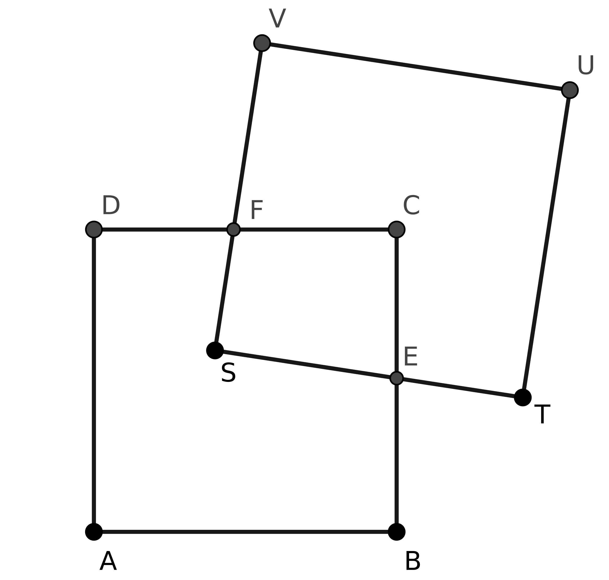
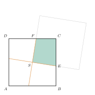
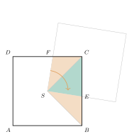

Aufgabe 6.8

- Betrachten Sie die Dreiecke in der Schnittfläche
- Nutzen Sie Kongruenzsätze
- Was ist speziell an den Diagonalen der Quadrate?
- Welche Winkel sind gleich?
Bezeichnungen wie im Bild der Aufgabe: Die Ecke $S$ von $STUV$ liegt im Mittelpunkt von $ABCD$. (Der Aufgabentext sagt es umgekehrt, gemeint ist aber die Lage im Bild: ein Quadrat hat seine Ecke im Mittelpunkt des anderen.) Die Seiten $SV$ und $ST$ schneiden $ABCD$ in $F$ und $E$. Die Schnittfläche ist das Viereck $SFCE$.
Schritt 1: vier gleiche Stücke

Man verlängert die beiden Schenkel des rechten Winkels bei $S$ über $S$ hinaus. Die zwei Geraden stehen senkrecht aufeinander und gehen durch den Mittelpunkt des Quadrats. Eine Vierteldrehung um $S$ bildet das Quadrat auf sich selbst ab und jede der beiden Geraden auf die andere. Darum führt sie jedes der vier Stücke in das nächste über: Alle vier sind kongruent und haben je den Inhalt $\frac{1}{4}$ des Quadrats.
Schritt 2: die Schnittfläche ist eines davon

Die Schnittfläche $SFCE$ ist das Stück zwischen den beiden Schenkeln. Man sieht dasselbe auch an einem einzelnen Dreieck: Die Vierteldrehung um $S$ bringt $F$ nach $E$ und $C$ nach $B$, also das Dreieck $SFC$ auf das Dreieck $SEB$. Damit ist \[A_{SFCE} = A_{SFC} + A_{SCE} = A_{SEB} + A_{SCE} = A_{SBC} = \tfrac{1}{4}A_{ABCD}.\] Das gilt für jede Lage von $STUV$, der Inhalt bleibt also gleich.
Im Video: Etappe 6 · Das Ergänzungsprinzip bei 4:43